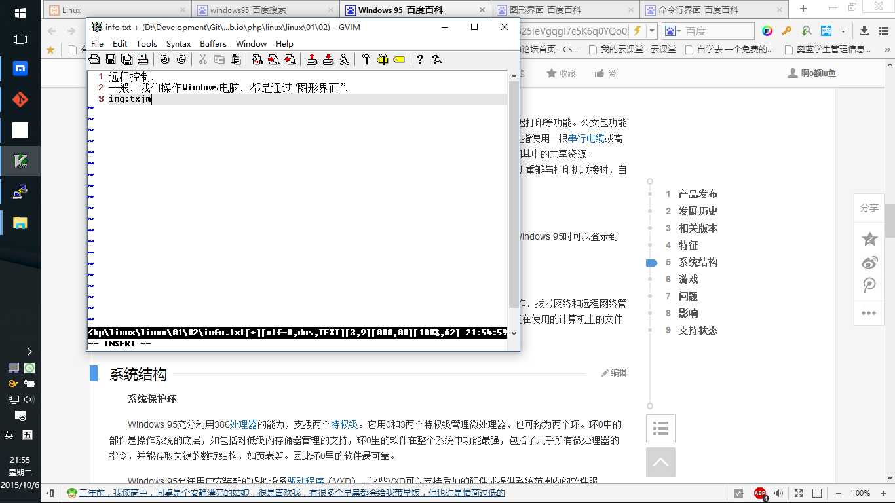
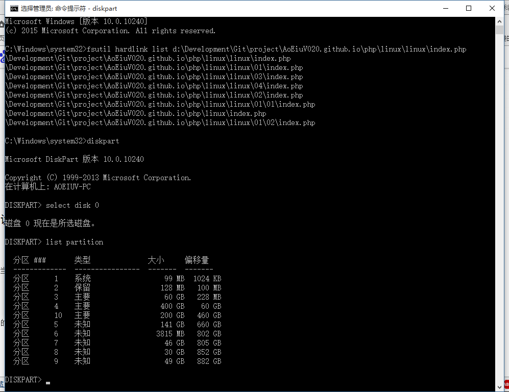
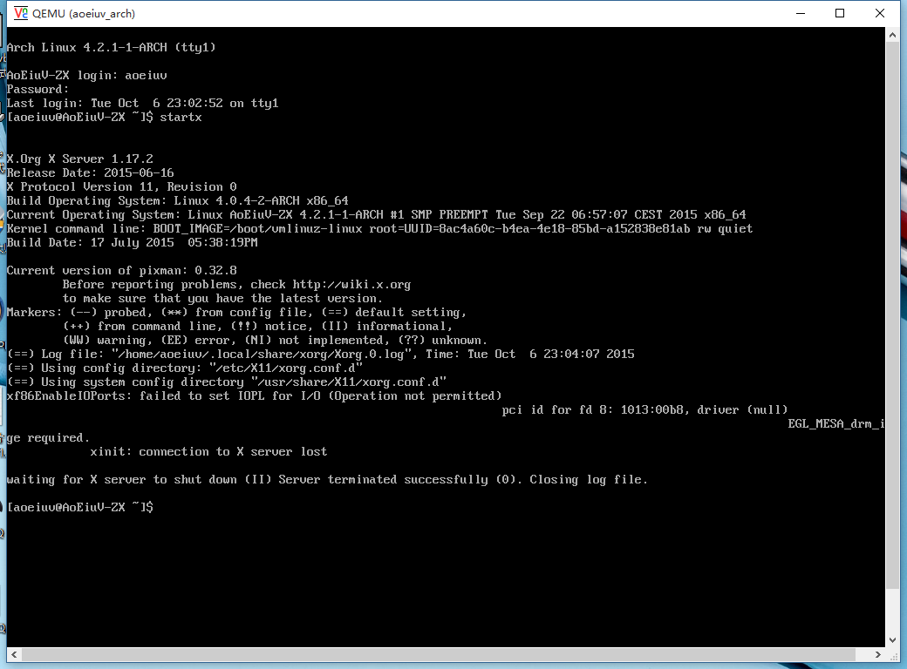

远程控制，首先说说“图形界面”和“字符界面”，一般，我们操作Windows电脑，都是通过“图形界面”。

相对的，还有就是“命令行界面”，或者叫“字符界面”“控制台”“终端”，console,等等各种叫法，这是windows的cmd，也是个字符界面。

linux服务器通常都是没有图形界面的，也就这几年慢慢流行桌面版的Linux，各种Ubuntu之类的名气突然大了起来，但我们还是要熟悉Linux的字符界面操作，远程控制最常见的就是ssh了，ssh远程控制得到的就是个字符界面，服务器和客户端之间传输的是一个个的字符，构成的一条条的命令，客户端发送命令给服务器，服务器执行命令并返回结果。

还有就是vnc，这个是图形界面的控制，看起来就像是电脑里面又开了个电脑，这个vnc客户端的窗口，看就像是另一台电脑的显示器一样。

